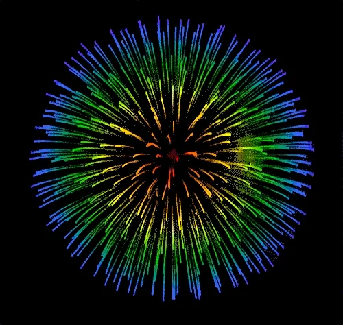

Maturafeier
25e | 25f | 25g | 25h
Mona Bogdanovic
Manon Prodolliet
Emma Schreibweis
Josina Zaugg
Thomas Widmer
Dolores Truffer
Nik Hürny
I Feel Love
Donna Summer
SF Musik
Christina Frehner
Rektorin
Dietmar Jucknischke
Jahrgangsverantwortlicher
Nadine A. Brügger
What a Wonderful World
Sam Cooke
SF Musik
Maturi & Maturæ
Klasse 25e
Jorma Wassmer
David Bloch
Linda Breuhahn
Alina Maria Bürgler
Sofia Hanna Burkhalter
Maria Chiara Cardillo
Noémie Nadia Chaiblaine
Tobias Mattia Früh
Elle Nives Medina Nuala Herrmann
Neil Kaufmann
Gal Klopshtok
Julia Lindt
Clara Mina Lussi
Olivia Mäder
Klara Selma Mauderli
Anina Moser
Bastian Moser
Lewin Christopher Schmid
Lionel Luc Soom
Lukas Colin Wegmann
25e

Neil Kaufmann
Stauffacher- und LibRomania Preis
Beste Matura der Klasse 25e
Klasse 25f
Florian Berger
Juri Matteo Burkard
Irinasoa Gautschi
Nils Finn Grüring
Sandro Jaun
Emilia Felicia Viktoria Kaspar
Ailine Kronenberg
Myriam Lehmann
Mervin Aaron Elias Müller
Théo Münger
Annita Pfister
Vivaswaan Prabu
Louis James Reinhard
Anaëlle Anouk Rohner
Elias Caspar Thomet
Alisa Anna von Allmen
Rhea Yael Wetter
Josina Lis Zaugg
Pascal Zbinden
25f
Juri Burkard
Stauffacher- und LibRomania Preis
Beste Matura der Klasse 25f
Klasse 25g
Michelle Furrer
Lorena Di Sano
Vanesa Fetahi
Theodor Hans Robert Freudweiler
Michelle Kim Guerreiro Vieira
Ava Malin Huber
Lorin Thaya Jaeger
Mael Sinan Kiener
Lavinia Loosli
Elin Jolie Ludi
Alejandro Maurer
Helin Lorin Ok
Anaïs Lena Pellon
Nicolas Pfäffli
Akiko Rossi
Melisa Sali
Jana Elena Schaub
Mathilda Sophia Schmid
Eliah Sidler
Khaled Souayfan
Raffaele Ettore Stutz
Elona Zubaku
25g
Elin Jolie Ludi
Stauffacher- und LibRomania Preis
Beste Matura der Klasse 25g
Klasse 25h
Isabelle Maurer
Sofie Lisa Aebischer
Rebecca Amoako
Laura Talita Blaser
Joelle Lea Bögli
Yanik Hamm
Shane Hocke
Leonie Hofmann
Angelina Holzer
Aathish Kamalanathan
Yannick Menétrey
Loris Rieder
Lucien Ringeisen
Hannah Lia Schaad
Noémi Sylvie Schuhmacher
Dario Schumacher
Lisa Elena Wasem
Yaëlle Zahnd
25h
Sofie Lisa Aebischer
Stauffacher- und LibRomania Preis
Beste Matura der Klasse 25h
Stauffacher- und LibRomania Preis
Beste Maturen des Jahrgangs